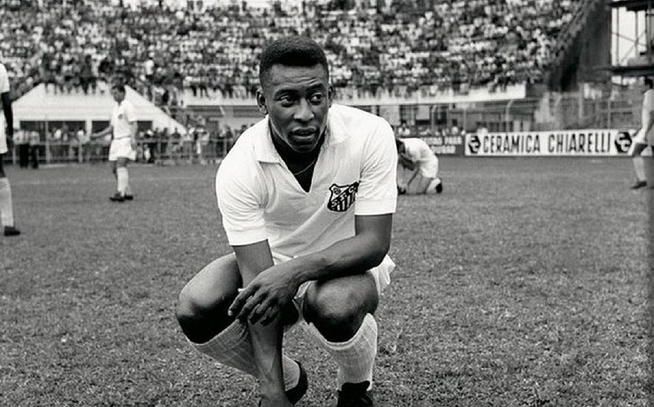
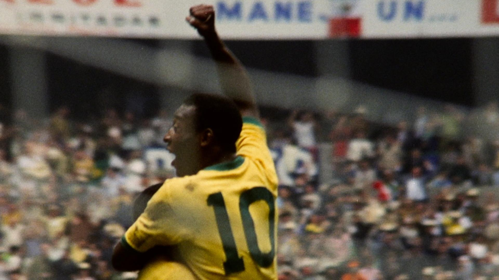
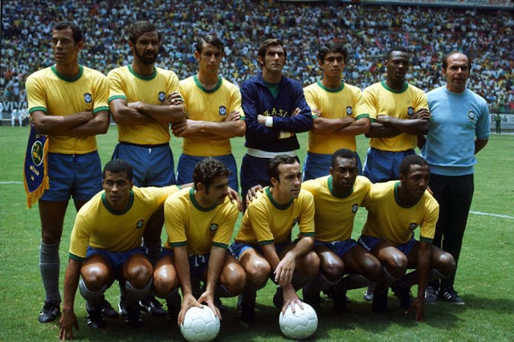
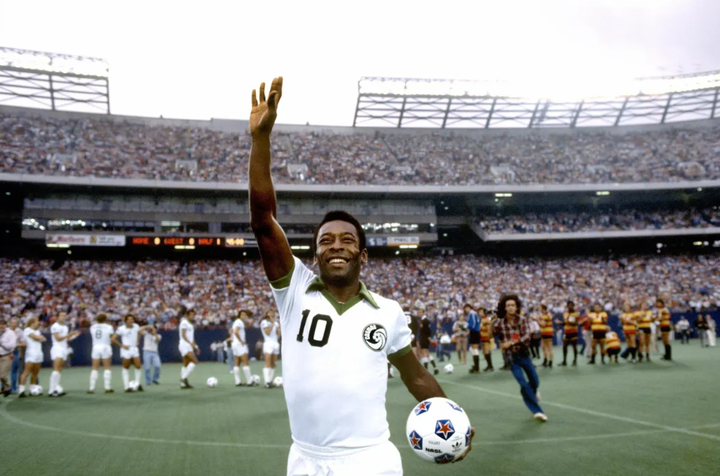
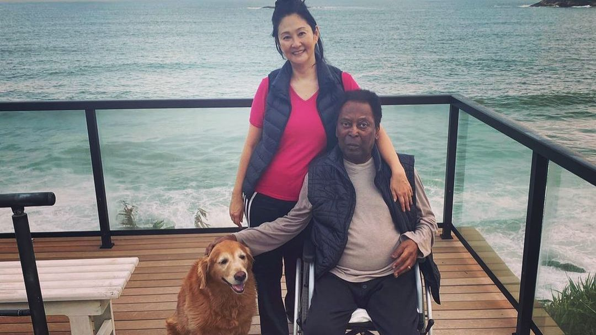
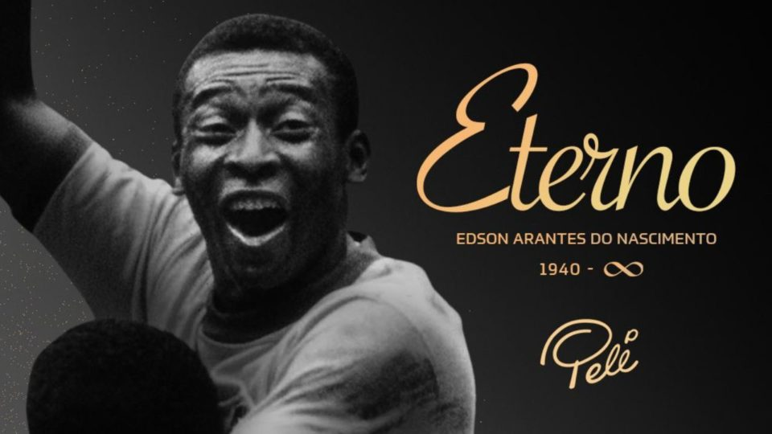

Vida e história do Pelé
A Origem
Edson Arantes do Nascimento, conhecido como Pelé, nasceu na cidade de
Três Corações, em Minas Gerais, no dia 23 de outubro de 1940. Filho de
João Ramos do Nascimento (Dondinho), também jogador de futebol, e de
Celeste Arantes. Desde pequeno Pelé gostava de futebol e jogava com
uma bola de pano. Em 1944 mudou-se com a família para a cidade de
Bauru, em São Paulo.
Santos Futebol Clube
Ainda em 1956, Pelé foi levado para treinar no Santos F.C. pelo também
jogador Waldemar de Brito. Em jogo treino, Pelé fez quatro gols,
quando seu time ganhou de 6 a 1. Sua primeira partida oficial foi no
dia 7 de setembro de 1956, em um jogo amistoso entre Santos e
Corinthians. O resultado foi de 7 a 1 para o Santos, com dois gols de
Pelé. Na contagem de 1000 gols da carreira, estes foram os primeiros
oficializados. Pelé levou o Santos a conquistar muitos títulos. Em
1974 fez o seu último jogo com a camisa do Santos.

Pelé começou a ser reconhecido nacionalmente ainda com 16 anos de
idade. Em 1957, o garoto já era titular do Santos e foi artilheiro do
Campeonato Paulista, o mais jovem até hoje, marcando 36 gols. O Rei do
Futebol atuou durante quase toda sua carreira no Santos, entre 1956 a
1974. No período, ele levou o clube a conquistar dez títulos estaduais
e seis campeonatos nacionais (Taça Brasil e Torneio Robertão), além de
duas Copas Libertadores e dois Mundiais de Clubes, em 1962 e 1963.
Na Libertadores, na época ainda conhecida como Copa Campeões da
América, o Santos, com uma das melhores equipes de todos os tempos,
conhecida como Balé Branco e liderada por Pelé, atraiu a atenção
internacional para o torneio. Em 1962, a equipe venceu o então
bicampeão Peñarol, do Uruguai, na final e foi o primeiro time
brasileiro a garantir o título na competição. Já em 1963, Pelé contou
com o apoio de Coutinho para vencer o torneio de novo, mas, dessa vez,
em cima do Boca Juniors, da Argentina. Também no Santos, em 1969, Pelé
marcou seu milésimo gol. O feito ocorreu em uma partida contra o
Vasco, no Maracanã, e foi realizado em uma cobrança de pênalti.
Pelé despediu-se do Santos no dia 2 de outubro de 1974. No estádio da
Vila Belmiro, a equipe santista enfrentou a Ponte Preta. Nesse dia,
Pelé ajoelhou-se no gramado, com os braços abertos e a bola à sua
frente para despedir-se do clube pedindo perdão, já que seria
transferido para o New York Cosmos depois de anos de insistência da
equipe dos Estados Unidos para contratá-lo. Pelo Santos, Pelé fez 1144
jogos e marcou 1.124 gols.
Seleção Brasileira

Passados dez meses da contratação de Pelé pelo Santos, o garoto foi
convocado pela Seleção Brasileira pela primeira vez para disputar a
Copa Roca (atual Superclássico das Américas). A competição era um
torneio amistoso entre a Seleção Brasileira e a Seleção Argentina. As
duas partidas foram realizadas no Brasil. A primeira marcou a estreia
de Pelé com a camisa do Brasil e foi realizada no Maracanã. A
Argentina venceu por 2 a 1, e o gol brasileiro foi marcado por Pelé.
Na partida de volta, no Estádio do Pacaembu, o Brasil venceu por 2 a
0, com um gol de Pelé e outro de Mazzola. Foi o primeiro título de
Pelé pela Seleção Brasileira.

"O Mundial de 1958 na Suécia iniciou a chamada Era de Ouro da Seleção
Brasileira. De 1958 a 1970, foram três títulos em quatro Copas. Em
1962, no Mundial do Chile, Pelé fez um gol antológico no primeiro
jogo, contra o México, mas sofreu uma contusão no segundo jogo e ficou
fora do restante do torneio. Sorte do Brasil que tinha também outras
estrelas, como Nílton Santos, Didi, Zagallo, Vavá e Garrincha, que
garantiram o bicampeonato. Em 1970, em plena Ditadura Militar, a Copa
do México serviu para amenizar o clima hostil que vivia o país. Além
de Pelé, a seleção de 1970 tinha outros grandes nomes do futebol, como
Jairzinho, Rivelino, Carlos Alberto, Clodoaldo, Tostão, Gérson e
Félix. Muitos consideram essa seleção a melhor de todos os tempos."
Pelé fez quatro gols na Copa do México, incluindo o primeiro da final
contra a Itália. O Brasil venceu por 4x1 e conquistou o tricampeonato.
Naquela Copa o artilheiro foi Jairzinho, com sete gols. Atuando pela
Seleção, Pelé tornou-se também o único jogador da história a ser
tricampeão mundial (1958, 1962 e 1970). Ele marcou 95 gols com a
camisa do Brasil e ainda é o maior artilheiro da seleção masculina.
Pelé fez seu último jogo pela Seleção Brasileira em julho 1971, no
Maracanã, em um amistoso contra a Iugoslávia.
New York Cosmos

Após 18 anos atuando pelo Santos e pela Seleção Brasileira, Pelé
assinou contrato com a equipe do New York Cosmos, dos Estados Unidos,
para jogar a temporada de 1975. Durante anos, Pelé recusou a proposta
de grandes times mundiais alegando que não queria jogar por outra
equipe que não fosse o Santos. A chegada do jogador ao país
norte-americano era tida como uma influência para despertar o
interesse da população do país pelo futebol. Anos depois, em
publicação feita em suas redes sociais, Pelé contou como foi
convencido a aceitar o convite do Cosmos. “O treinador do Cosmos,
Clive Toye, disse para mim. 'Você pode ir para Espanha ou Itália e
ganhar um título, mas você pode vir para o Cosmos e ganhar um país.'
Que grande experiência foi essa.” — relatou o Rei do Futebol.
No Cosmos, entre jogos oficiais e amistosos, Pelé fez 106 partidas e
marcou 64 gols. A ida de Pelé para a equipe também fez a média de
público aumentar. O número que era de 3.578 pessoas por jogo em 1974,
passou para 10.450 (1975), 18.227 (1976) e 34.142 (1977). Com isso, o
time que jogava no Downing Stadium acabou mudando, em 1976, para o
Yankee Stadium e, na outra temporada, para o Giants — estádios de
beisebol e de futebol americano, respectivamente. A passagem de Pelé
surtiu o efeito que os norte-americanos buscavam. A Seleção dos EUA
voltou à Copa do Mundo em 1990, quebrando um jejum de 40 anos, e o
país recebeu o Mundial em 1994.
Vida Pessoal

O filho de Dondinho e Dona Celeste teve um irmão, Jair Arantes do
Nascimento, mais conhecido como Zoca. O irmão é o braço direito de
Pelé, ajudando o Rei a cuidar dos negócios e da carreira. Na vida
pessoal, Pelé relacionou-se com algumas famosas e foi casado três
vezes. O primeiro casamento durou de 1966 a 1978, com Rosemari de Reis
Cholbicon, e rendeu três filhos: Kelly Cristina, Jennifer e Edson. O
filho Edson, conhecido como Edinho, seguiu a carreira do pai e
tornou-se goleiro do Santos na década de 1990. Depois da
aposentadoria, envolveu-se com tráfico de drogas e lavagem de
dinheiro, o que lhe rendeu condenação de 12 anos de prisão.
Em 1991, Pelé descobriu que tinha outra filha, Sandra Regina, fruto de
um relacionamento com a empregada doméstica Anísia Machado em 1964.
Sandra precisou entrar na Justiça para ser reconhecida por Pelé, o que
aconteceu apenas em 1996. Após exames de DNA e várias brigas
judiciais, Sandra Regina recebeu o sobrenome Arantes do Nascimento.
Sandra morreu em 2006, vítima de um câncer na mama. Os dois filhos de
Sandra, Octávio e Gabriel, de 15 e 13 anos na época, ganharam na
Justiça o direito de receber uma pensão do avô. O valor era de sete
salários mínimos para cada neto. O segundo casamento de Pelé, em 1994,
foi com a cantora gospel Assíria Lemos Seixas e durou até 2008. Do
matrimônio eles tiveram os gêmeos Celeste e Joshua. A terceira esposa
de Pelé foi Marcia Cibele Aoki, a qual ele conheceu em 2008 durante um
evento em Nova Iorque e com quem oficializou a relação em 2016. Os
dois não tiveram filhos juntos.
Morte do Pelé

Clique na imagem para acessar o vídeo completo
O Rei Pelé faleceu no dia 29 de dezembro de 2022, aos 82 anos, por
falência múltipla de órgãos. O ex-jogador estava internado há semanas
no Hospital Israelita Albert Einstein para tratar da progressão de um
câncer de cólon. Em 2021 o atleta já havia passado por uma cirurgia e
sessões de quimioterapia para tratar da doença, no entanto foram
detectadas metástases no intestino, pulmão e fígado, e a doença passou
a não responder ao tratamento. Com a notícia da morte do maior jogador
de futebol de todos os tempos, homenagens foram feitas em todo o
mundo. Em novembro, durante a realização da Copa do Mundo de Futebol
no Catar, Pelé já estava hospitalizado e recebeu diversas homenagens
em jogos da Seleção Brasileira.
Apesar da morte do Rei Pelé ter sido em 2022, a despedida só começou a
ser realizada no ano seguinte. A pedidos da família, a cerimônia de
velório ocorreu somente nos dias 2 e 3 de janeiro de 2023, no estádio
da Vila Belmiro, que pertence ao Santos, clube em que Pelé começou sua
história. O adiamento no velório do Rei se deu para não coincidir com
a cerimônia de coroação do novo presidente da República, Luiz Inácio
Lula da Silva, eleito em 2022, e que tomou posse para seu terceiro
mandato em 1º de janeiro de 2023.